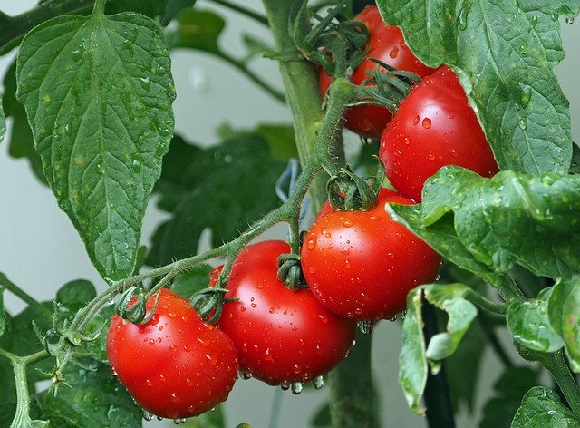
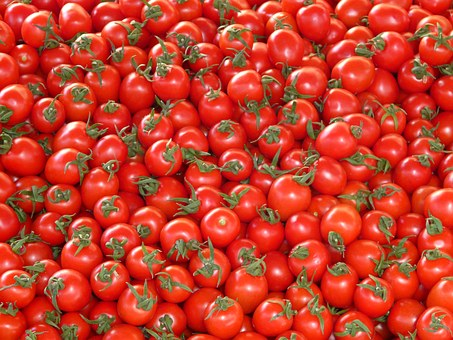

Irrigation, GreenHouse and Agro-Inputs
We provide drip irrigation kits and system, hybrid seeds, plastic mulches, pesticides, fertilizers, farm set-upservices,soil testing and everything that has got to do with farming
We provide drip irrigation kits and system, hybrid seeds, plastic mulches, pesticides, fertilizers, farm set-upservices,soil testing and everything that has got to do with farming

Tomato farming in Nigeria is one of the farming businesses that anybody can do to make reasonable profit.
Tomato farming is simply the cultivation of tomatoes with the aim of harvesting the fruits. Almost everybody in the world eats tomatoes, Nigerians are no exception.
In Nigeria, it is not uncommon to see people eating foods containing tomatoes everyday. Most Nigeria soups and delicacies have tomatoes as one of the principal ingredients.
Tomato farming can be done anywhere in Nigeria, be it Lagos, Kano, Jos, Abuja, Oyo, Ibadan, Kaduna, Owerri, Port Harcourt, Calabar, Ondo, Ekiti, Osun and Benue etc.
The following are the steps to take to grow tomato in Nigeria:
1. Site Selection
Tomato prefers farmland or soil that is fertile. The site to be used for the growing of tomato should have a sandy loamy soil rich in organic matters.
The site should also have good roads for easy evacuation of produce after harvest. Tomatoes can get bad if they are not quickly evacuated to a place where they can be used or preserved.
Tomato can grow under tropical climatic conditions. It can grow in temperature of 10 Celsius to 30 Celsius. When temperature exceeds 35 Celsius, there will be flower abortion and a decline in the physiological processes in the tomato plant.
Tomato can do well in Rain Forest, Guinea Savannah, Sudan Savannah, Sahel Savannah, Plateau Area and Mangrove Regions of Nigeria. It should be noted that tomato do not like areas with a high humidity level.
2. Climatic conditions for tomato farming
Tomato plants grow well in tropical conditions. Tomato plants will not do well in temperate environment. It is not uncommon to see that tomato plants thrive in warm countries like Nigeria, Ghana, parts of the United States and Brazil etc.
The optimum growing temperature for tomatoes is 20 – 28 Celsius, though some varieties of tomatoes that are heat tolerant like Platinum F1 can still do well in very hot temperature. The flowers of tomato plants abort when it is too hot, when it is also too cold, the fruits will not set.
In areas where the climatic conditions are not favourable for the cultivation of tomatoes, climate controlled greenhouses can be used. Greenhouses can be used to mimic the conditions suitable for tomato farming.
3. Finance Requirement
To grow tomato, you need to compute and analyze the expected cost, expected revenue and expected profit. A tomato farming business plan has to be written.
4. Soil Requirement
The soil to be used for tomato farming should have a pH of 5.5 – 6.5. If the soil is too acidic, it should be amended with limestone or dolomite.
The soil should also be rich in organic matter so that it will be able to hold water well. Soil with high salinity should be avoided.
5. Land Preparation for Tomato Farming
Nigeria has loamy, clay and sandy soil. Tomato can grow well in all these types of soil, however, there may need some amendments. Tomato plants like loamy soil, clay soil can retain a lot of water that can cause root rot.
In the savannah zones of Nigeria (most Northern states), it is somewhat easy to do land preparation for tomato farming because the land is populated by mostly grasses and short weeds. A tractor can easily plough and harrow the land and make it ready for planting.
In the rain forest and other forest zones of Nigeria, the vegetation is thick with trees forming canopies. To do land preparation in these zones, the farmer may need to hire a bulldozer. Please note if a bulldozer is used, the top soil must not be removed. The cost of land preparation in the forest zones in Nigeria is high.
Plough of the soil is done immediately after the trees and other vegetation have been removed from the farmland. Harrowing follows ploughing. Riding is also advised to be done. Ridging improves the soil and improves water retention. A tractor can do plough, harrowing and ridging.
The use of manure especially chicken manure is advisable after ridging. Some people apply manure and re-plough their farmland so that the manure can be well mixed with the soil.

6. Variety of Tomato to Plant (Tomato Seeds)
There are different types of tomato seeds. Tomato seeds can be categorized under hybrid seeds and open pollinated seeds. Hybrid seeds are bred to resist some diseases and pests; they often have a higher yield than open pollinated seeds. Hybrids seeds are not advised to be saved and replanted. Some hybrid tomato seeds that can be planted
7. Irrigation for Tomato Farming
I am sure that you might have heard people telling you that the use of irrigation can significantly increase your tomato yield and assure all year round cultivation of planting. The question is, which type of irrigation is best suited for tomato farming in Nigeria?
A lot of tomato farmers in Nigeria still rely on rains to cultivate their crop. Though, it may sound awkward, tomato plants do not really do well in the rainy season except you are a very good farmer. Rains increase the chances of fungal infections on the tomato plants, rains can also cause flower abortion.
Drip irrigation is the most suitable type of irrigation for tomato farming in Nigeria. Drip irrigation conserves a lot of water as compared to other types of irrigation; it also ensures that water is passed to where the plants need it most, which is the root. Drip irrigation also allows the passing of fertilizers to the roots of every plants in little doses every day or intermittently.
Drip irrigation can increase tomato yield by as much as 150% as compared to rain fed farming. I have seen tomato farmers who increased their yields by as much as 200%, thanks to drip irrigation system.

8.nusery management tomato farming
In tomato farming, a nursery is required, though some farmers use direct seeding method for tomato cultivation, this is not advisable except if you are very skilled in the act of cultivating tomato. In Nigeria, almost all tomato farmers I have seen nursed their tomato seedlings in nurseries before transplanting to the field.
The seed rate to be used for one acre tomato nursery should be 300 - 500 grams of tomato seeds.
Farmyard manure or animal manure like chicken litters should be mixed with the soil when preparing soil beds for nursery for tomato farming. Pesticides should also be used to take out any pest or disease on the soil beds.
To avoid diseases in the nursery, the nursery and seedlings should be drenched with fungicides like Copper Oxide, Ridomil Gold and Red Force. Insecticides like Belt Expert, Tihan and Thunder should also be used for insect management.
To reduce transplanting shock and ensure very healthy seedlings, seedling trays are advised to be used for tomato nursery. The nursery trays can be filled with sterile substrate like coco peat to ensure that the seedlings have a head start without any pests or diseases.

9. Transplanting of Tomato Seedlings
Tomato seedlings are usually transplanted to the field after 21 – 30 days of seeding. The seedlings should be hardened off before transplanting.
The field should be well irrigated before the transplantation of the seedlings. Seedlings should also be transplanted in the early morning when the sun is not intense. It is better if the seedlings are transplanted in the evening when the intensity of sunlight has significantly reduced.
The intra-row planting spacing to be used should be 30cm – 60 cm depending on the variety planted. The inter-row planting spacing to be used should be 50 – 100 cm.
10. Application of Fertilizers in Tomato Farming
Soil analysis or test is the first step before you add any fertilizer to your farmland. Please ensure that you use a reputable laboratory for your soil analysis.
Depending on the result of your soil analysis, 2-5 tonnes of manure should be applied to a hectare of your tomato farmland. Chicken manure is very rich in nutrients, whilst it can help in making your soil richer in nutrients, if over-applied, it can be detrimental to your tomato plants. Manure improves the water and nutrients retention rates of soil. I have seen a tomato farmer who increased his yield by 70% because he used chicken manure.
At the pre-planting stage in tomato farming, a fertilizer with a higher phosphorus content should be used. Phosphorus helps in building the roots of plants. Plants with well-formed and bigger roots extract more water and nutrients from the soil; this also leads to enhanced yield. Fertilisers like single super phosphate (ssp), Diammonium Phosphate (DAP), potassium sulfate, dolomite, calmag fertilizer and ammonium nitrate can be applied. Simple NPK fertilisers can also be applied. Fertiliser application called base dressing is very important at the pre-planting stage.
At the vegetative stage when the tomato plants are having a lot of leaves, fertilisers with a high nitrogen value should be used. Examples of high nitrogenous fertilisers are urea, NPK 20:10:10 and nitrate fertilisers. These fertilizes make the leaves bigger. Big leaves enable the plant to make use of sunlight well and improve photosynthesis. Calcium fertilizer like calcium nitrate should also be used at the vegetative stage. Calcium is known to help plants in preventing diseases. It also improves flowering and fruiting.
When the tomato plants are flowering and fruiting, fertilisers with high potassium and calcium contents should be used. Please note you should get an agronomist to analyse your soil test result and guide you on how to apply your fertilisers.
Drip irrigation enables farmers to apply fertilisers easily. The fertilisers can be dissolved in water and passed to the roots of the plants through venture injectors or dosing pumps. This process is called fertigation. In fertigation, fertilisers are applied in small quantities every day or bi-weekly.
Tomato plants need a lot of calcium. When the tomato plants do not get enough calcium, the fruits are deformed; this is called blossom end rots. Calcium is very important in stress tolerance and diseases prevention. Calcium also helps the plants in making use of other nutrients.
11. Weed Control and Pruning in Tomato Farming
Depending on the knowledge and capital the tomato farmer has, weeding can be done by hand or through mechanized means. Weeding by hand is done through cutlasses and hoes.
There are machines that can be used for weeding. These machines save labour and can also make the work faster. Some types of weeders include the knapsack petrol driven weeder, petrol powered push type weeder and tractors. Tractors can be attached with weeding implements for effective weeding of tomato plants.
A burner can also be used as weeders. There is an implement that produces blue flame that can be used to kill unwanted plants on farms.
Weeds can be dangerous to tomato plants. They can harbor pests and diseases which can spread to the tomato plants. Weeds can also reduce tomato yield by as much as 98% as weeds share water and nutrients with the main crop.
Like peppers and some other crops, pruning of the stems and leaves of tomato plants can make the plant concentrate all efforts and energy on the fruits, pruning in tomato farming leads to higher yield. Pruning should be done only by experienced tomato farmers.
12. Pest Control in Tomato Farming
Tomato plants and fruits attract a lot of pests, if these pests are not prevented or controlled, a tomato farmer may harvest little or no fruits.
The pests that attack tomato plants in Nigeria include flies, white flies, thrips, insects, aphids, pod borers, worms and grubs.
For example, cut worms are common in chicken manure, if manure is not treated before application in tomato farming, cut worms can wreck a lot of damages on the tomato plants.
Some pests like nematodes and root grubs are common in soils in Nigeria. Nematicides like vellum and wormforce can be used to prevent or control these types of pests as they can inflict damages on tomato plants.
To control pests, chemical pesticides, organic pesticides and biopesticides can be used. Chemical pesticides include insecticides, acaricides, nematicides and fungicides manufactured with chemicals. These chemical pesticides can be effective in the prevention and control of pests in tomato farming in Nigeria.
Biopesticides use biological like beneficial microbes to overwhelm or prevent and control pests in farming. There are some beneficial bacteria and fungicides that can be used in tomato farming for pest control and prevention.
Neem oil is an organic fungicide and insecticide that can be used for the prevention and control of pests in farming. A suitable surfactant should be used to mix neem oil in water before use on plants.

13. Disease Control in Tomato Farming
From what I have observed over a period of 10 years in tomato farming in Nigeria, mites attack, bacteria wilt, mosaic viral infection and blight diseases are the commonest diseases of tomato plants. The first guard against diseases in tomato farming is to buy treated seeds from credible suppliers. The second step is to use a sterile media in seedlings trays to raise your tomato seedlings.
Before the tomato seedlings are transplanted, the field should be clean and cleared of left over plants and debris. The field should be treated with pesticides so that all pests and diseases are cleared.
Pesticides that can be used on the soil before transplanting include nematicides, insecticides and fungicides. Organic disease prevention and control and biological can also be used.
Some of the diseases that affect tomato include:

14. Tomato Harvest
In tomato farming, harvesting typically commences 55-70 days after transplanting depending on the variety of tomato planted. Some varieties of tomatoes have thick fruits; these thick fruits last longer than the soft skin tomato varieties. It is advised that a farmer should have a way of preserving his tomato fruits after harvest.
Tomatoes are usually harvested when they are red or yellow turning into red. Some tomato farmers harvest their tomatoes when green, I do not advise this as it may be difficult to turn the colour from green to red. People will not buy green tomatoes..
For those who have the financial capability, you can harvest your tomato fruits and process them into paste and puree on farm. Tomatoes can also be harvested, sun dried and milled into powder.
15. Post-Harvest and Marketing
Post-harvest activities in tomato farming include sorting, packaging and storage of the harvested tomato fruits.
Tomato can be sold as fresh tomatoes or processed into other products. Fresh tomatoes are usually sold in the open markets and the more organized markets like hotels and supermarkets in Nigeria.
Tomato plants have a similar growth pattern like most pepper plants. Tomato plants spend about 100-130 days from seeding to the final harvest if you are planting the determinate type of tomatoes.
The indeterminate type of tomatoes can last for 6-8 months. Indeterminate tomatoes are mostly planted in greenhouses; they grow profusely and can be harvested for several months. The semi-indeterminate variety of tomatoes has the features of both determinate tomatoes and indeterminate tomatoes.
The first stage of tomato plants is the seeding stage. At the seeding stage, tomato seeds are planted in soil beds or in seedling trays. The next stage is the stage that involves the growing of the tomato seedlings in the nursery. Tomato seedlings do not like too much sun, before transplanting, the seedlings must be hardened.
The vegetative stage is the stage where the tomato plant builds and enlarges its leaves. At this stage, the tomato plants have a lot of leaves which it uses for capturing sunlight for photosynthesis. The tomato farmer should strive not to get the leaves infected at this stage. The use of nitrogen is also encouraged at this stage.
The flowering stage is the next stage after the vegetative stage. Tomato plants should be checked for thrips during this stage, though thrips are not much of a challenge in tomato. Thrips love to feed on the inner part of the flowers, when this happens; the flower and the fruits are deformed.
The harvest stage is the last stage in tomato farming. The harvest stage is the stage that farmers harvest the tomato fruits for sale in the market. Harvests should be done promptly to ensure that the plants produce more tomato fruits.
Open field tomato farming is the growing of tomato without the use of any protected covering or house. Most farmers in Nigeria use the open field method to cultivate tomatoes. As a matter of fact, as much as 98% of the tomato farmers in Nigeria practice the open field growing method.
A tomato farmer should endeavor to trellis his tomato plants in order to guard against the tomato fruits touching the soil. When tomato fruits touch the soil, they get infected or get damaged by pests and diseases. Stakes and ropes can be used to prevent fruits, stems and leaves touching he soil.
Before a farmer does open field tomato farming, he should conduct a soil test to know the nutrients profile and microbial nature of his soil. Open field tomato farming does not require a lot of fertilisers like greenhouse tomato farming.
A greenhouse is a covered structure used in the cultivation of plants or crops. Tomato can be cultivated under greenhouse conditions.
In greenhouses or other covered structures, tomato plants are planted very close to each other in order to maximize the usage of space and to guarantee a high yield that will justify the high cost of setting up a greenhouse.
The premium market like hotels and supermarkets prefer greenhouse grown tomatoes because they have a better look and feel than the open field grown tomatoes. They are also grown under cleaner conditions than open field tomatoes.
The main demerit of using a greenhouse for tomato farming is the cost. However, if you have a good yield, you can still have a fantastic Return on Investment (ROI).
Theoretically, most hybrid tomato varieties can yield 25-30 tonnes per acre under open filed conditions. Some hybrid tomato varieties like the indeterminate types can yield up to 100 tonnes per acre if growing greenhouses.
In Nigeria, most tomato farmers especially the small scale ones who do not implement good agronomic practices get a yield of about 2-5 tonnes per acre. The Nigerian tomato farmers that use drip irrigation and practice good agronomic practices get up to 25 tonnes per acre.
Tomato yield depends on factors like irrigation type, fertilisers used, weather condition, soil fertility, level of diseases and pests, availability of water and soil fertility etc.